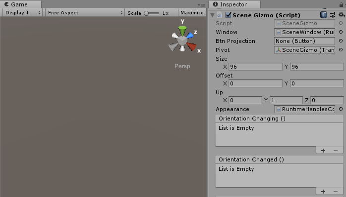
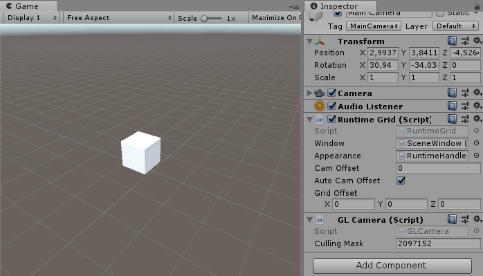
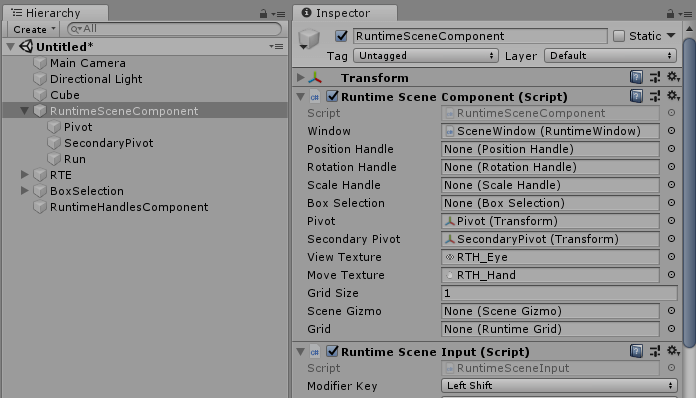

Transform Handles Docs
Overview
Runtime Transform Handles are the runtime 3D controls that are used to manipulate items in the scene. There are three built-in transform tools to position, rotate and scale object via transform component. Supplementary controls such as scene gizmo, selection gizmo and grid allows to change viewing angle and projection mode, identify selected objects and orientate in scene space. Another important components: selection component, scene component and handles component allows to select objects, navigate in scene and change transform handles appearance. Scripts, prefabs and example scenes for transform handles can be found in Assets/Battlehub/RTHandles folder.
Note
Runtime Transform Handles are simply referred as transform handles through this text
Here is how transform handles and components rendered in the game view:

All in one:

Getting Started
Here are four simple steps to get started with transform handles:
- Create transform handles using Tools->Runtime Handles->Create.

- Create and select Game Object.

- Enable object editing using Tools->Runtime Handles->Enable Editing.

- Hit play. After clicking on the Game Object in game view you should see following:

Following actions available by default:
| Action | Input |
|---|---|
| Select | Left-click |
| Move (Pan) | Hold middle or right mouse button, then drag |
| Orbit | Hold Alt+left-click, then drag |
| Zoom | Use the scroll wheel |
| Undo | Shift + Z (Ctrl + Z in player) |
| Redo | Shift + Y (Ctrl + Y in player) |
Note
Example scenes can be found in Assets/Battlehub/RTHandles/Demo
Base Handle
This is the base class of position, rotation and scale transform handles. Therefore all transform handles have following settings:
Window- reference to the window. Interaction with transform handle allowed only in case referenced window is active.HighlightOnHover- bool value. If true then transform handles will be highlighted on pointer over. Set it to false if touch input is used. (default: true)Appearance- reference to the runtime handles component. Various visual settings.Model- reference to the prefab with BaseHandle model component attached. If Model is set then default rendering procedure will be disabled and prefab instance will be rendered instead.Targets- array of transforms to be modified by transform handle.GridSize- float value used in unit-snapping mode. By default Unit-snapping mode is activated with 'Shift' key.BeforeDrag- event raised before transform handle drag.Drop- event raised when drag and drop operation completed.
Position Handle
To create position handle do following:
- Create Game Object.
- Add Assets/Battlehub/RTHandles/Scripts/PositionHandle component.

It is possible to adjust color and scale of transform handles using runtime handles component while proportions of individual parts such as lines and arrows are adjustable using Position Handle Model script attached to PositionHandleModel.prefab.
To change position handle proportions modify Assets/Battlehub/RTHandles/Prefabs/PositionHandleModel.prefab and reference it by setting Model field of Position Handle.

Position Handle Model script has following fields:
Radius- line thickness (default: 0,01).Length- line length (default: 1).Arrow Radius- radius of the arrow cone base (default 0,075).Arrow Length- height of the arrow (default 0,2).Quad Length- light of side of xy, xz and yz quads (default 0,2).
Adjustments example:

Rotation Handle
To create rotation handle do following:
- Create Game Object.
- Add Assets/Battlehub/RTHandles/Scripts/RotationHandle component.

It is possible to adjust color and scale of transform handles using runtime handles component. Line thickness and proportions of individual parts are adjustable using Rotation Handle Model script attached to RotationHandleModel.prefab.
To change rotation handle proportions modify Assets/Battlehub/RTHandles/Prefabs/RotationHandleModel.prefab and reference it by setting Model field of Rotation Handle.

Rotation Handle Model script has following fields:
Minor Radius- line thickness (default: 0,0075).Major Radius- x-axis, y-axis, z-axis, inner camera-forward-axis circle radius (default: 1).Outer Radius- outer camera-forward-axis circle radius (default: 1,11).
Adjustments example:

Scale Handle
To create scale handle do following:
- Create Game Object.
- Add Assets/Battlehub/RTHandles/Scripts/ScaleHandle component.

It is possible to adjust color and scale of transform handles using runtime handles component. Line thickness and proportions of individual parts are adjustable using Scale Handle Model script attached to ScaleHandleModel.prefab.
To change scale handle proportions modify Assets/Battlehub/RTHandles/Prefabs/ScaleHandleModel.prefab and reference it by setting Model field of Scale Handle.

Scale Handle Model script has following fields:
Radius- line thickness (default: 0,01).Length- line length (default: 1).Arrow Radius- cap size (default: 0,05).
Adjustments example:

Locking Axes
Assets/Battlehub/RTCommon/Scripts/LockAxes component will prevent certain transformations from being modified by position, rotation or scale handles. Attach it to selectable Game Object and choose axes you want to lock.

Scene Gizmo
To create scene gizmo do following:
- Create Game Object.
- Add Assets/Battlehub/RTHandles/Scripts/SceneGizmo component.

Scene gizmo script has following fields:
Window- reference to the window. Interaction with scene gizmo allowed only in case referenced window is active.Btn Projection- UGUI button to switch between orthographic and perspective projection (default: None).Pivot- transformation of the object around which the camera rotates.Size- scene gizmo size (default: 96,96).Offset- scene gizmo offset (default: 0,0).Appearance- reference to the runtime handles component. Various visual settings.Orientation Changing- event fires when camera rotation and position are about to be changed.Orientation Changed- event fires when camera rotation and position are changed.Projection Changed- event fires when camera projection changed.
Selection Gizmo
Selection gizmo from Assets/Battlehub/RTHandles/Scripts/SceneGizmo is automatically added to selected game object. To change color or hide selection gizmo use Bounds Color field of runtime handles component.

Grid
To create grid do following:
- Select Camera
- Add Assets/Battlehub/RTHandles/Scripts/RuntimeGrid component.

To change color of the grid use Grid Color field of runtime handles component.
Runtime Handles Component
Use this script to change appearance of transform handles:
- Create Game Object.
- Add Assets/Battlehub/RTHandles/Scripts/RuntimeHandlesComponent component

Runtime Handles Component script has following fields:
Colors- transform handles, scene gizmo, selection gizmo and grid colors.Handle Scale- transform handles scale (default: 1).Selection Margin- scale of clickable area around transform handle axes (default: 1).Invert Z Axis- invert position handle z-axis (default: false).Position Handle Arrows Only- hide xy, yz and xz quads (default: false).
Runtime Selection Component
This is the implementation of default selection behavior.
To enable default selection behavior:
- Create Game Object.
- Add Assets/Battlehub/RTHandles/Scripts/RuntimeSelectionComponent.
- Choose objects you want to make selectable and click Tools->Runtime Handles->Enable Editing.
- Alternatively add Assets/Battlehub/RTCommon/Scripts/ExposeToEditor component.

Following actions defined in Assets/Battlehub/RTHandles/Scripts/Input/RuntimeSelectionInput :
| Action | Input |
|---|---|
| Select | Left-click |
| Select multiple | Hold Shift + left-click (Ctrl + left-click in player) |
| Select all | Hold Shift + A (Ctrl + A in player) |
Runtime Selection Component script has following fields:
Window- reference to the window.Position Handle- reference to the position-handle.Rotation Handle- reference to the rotation-handle.Scale Handle- reference to the scale-handle.Box Selection- reference to the box-selection.Pivot- Window.Camera will look at this object.
To switch between transform handles using Q W E R keys do following :
- Add Battlehub/RTHandles/Scripts/Input/RuntimeToolsInput component.
Note
If you wish to switch between transform handles programmatically proceed to -> this <- section.
Note
If you wish to change selection programmatically proceed to -> this <- section.
Box Selection
To create Box Selection do following:
- Create Game Object.
- Add Assets/Battlehub/RTHandles/Scripts/BoxSelection component.

Note
Game Objects without ExposeToEditor component are invisible to Box Selection.
Note
Box Selection use Runtime Selection API to store selected objects.
Box Selection has following fields:
Window- reference to the window.Graphics- sprite which is used to render box selection.Use Camera Space- use camera space for rendering (true) or screen space (false) (default:true)Box Selection Method- box selection method:- Loose Fitting - use renderer bounds and collider (default);
- Bounds Center - use bounds center;
- Transform Center - use transform center;
Use following code to filter objects selected using Box Selection:
using UnityEditor;
//In this example objects with name "Capsule" are filtered out
public class FilteringBehaviour : MonoBehaviour
{
[SerializeField]
private BoxSelection m_boxSelection;
private void Start()
{
m_boxSelection.Filtering += OnFiltering;
}
private void OnDestroy()
{
if(m_boxSelection != null)
{
m_boxSelection.Filtering -= OnFiltering;
}
}
private void OnFiltering(object sender, FilteringArgs e)
{
if (e.Object.name == "Capsule")
{
e.Cancel = true;
}
}
}
Runtime Scene Component
Runtime Scene Component extends Runtime Selection Component and enables mouse orbiting, movement and zoom.
To create Runtime Scene Component do following:
- Create Game Object
- Add Assets/Battlehub/RTHandles/Scripts/RuntimeSelectionComponent.

Runtime Scene Component has following fields:
View Texture- cursor which is visible during mouse orbiting.Move Texture- cursor which is visible during movement.Grid Size- used by Snap To Grid method.Scene Gizmo- reference to the Scene Gizmo.Grid- reference to the Grid.
Following actions defined in Assets/Battlehub/RTHandles/Scripts/Input/RuntimeSceneInput :
| Action | Input |
|---|---|
| Focus | Press F |
| Snap To Grid | Press Shift + S (Ctrl + S in player) |
| Move (Pan) | Hold middle or right mouse button, then drag |
| Orbit | Hold Alt+left-click, then drag |
| Zoom | Use the scroll wheel |